Cours
1. Généralités⚓︎
1.1 Définition⚓︎
Définition générale : Une Base de données est un ensemble organisé d'informations avec un objectif commun.
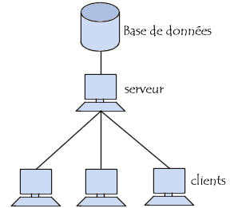
Peu importe le support utilisé pour rassembler et stocker les données (papier, fichiers, etc.), dès lors que des données sont rassemblées et stockées d'une manière organisée dans un but spécifique, on parle de base de données.
Définition informatique : Une Base de Données (BdD), en anglais Data Base (DB), est une collection d’informations structurées, cohérentes, persistantes, partagées.
Structurée : les données sont organisées. Elles donnent un sens/une vue du système d’information qu’elles représentent.
Persistante : La durée de vie des données doivent être supérieure à la durée des programmes qui les manipulent. La persistance peut être obtenue en effectuant un stockage permanent (sur le disque).
Cohérente : la base de données sert pour prendre un ensemble de décision. Les données doivent être juste et non redondante.
Partagée : L'un des avantages d'une base de données est que les informations qui la constituent peuvent être accessibles aisément par plusieurs programmes qui les utilisent simultanément avec des objectifs différents.
exemple : Application de gestion RH (paye, congés, …)
Une base de données peut être locale ou répartie. Elle est dite locale quand elle est utilisée sur une machine par un utilisateur et repartie quand les informations sont stockées sur des machines distantes (serveur) et accessibles par réseau.
 Conséquence : Il faut un « pilote », un administrateur de base de données (DBA).
Conséquence : Il faut un « pilote », un administrateur de base de données (DBA).
DBA
Quels ont les tâches d'un administrateur de Base de données ? vidéo
1.2 Historique⚓︎
Au début de l'informatique, on a voulu construire des systèmes pour effectuer des calculs (équations différentielles, calcul matriciel, ...). L’approche classique de mise en place d’une application informatique dans une entreprise, consistait le plus souvent à l’écriture d’un certain nombre de programmes destinés à l’exploitation d’un ensemble de fichiers qu’il fallait aussi créer.
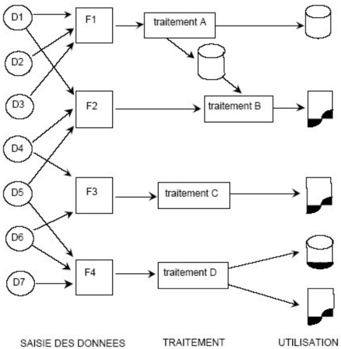 Légende : D pour données, F pour Fichiers
Les systèmes classiques de fichiers posent les problèmes suivants:
 La dépendance des données et des traitements
La dépendance des données et des traitements
Lors de la mise à jour d'un fichier, la totalité du fichier est rendue indisponible pour les autres utilisateurs (seuls certains systèmes disposent d'utilitaires spécifiques pour la gestion des accès concurrents),
Les procédures de sécurité (confidentialité et reprise après panne) doivent être programmées.
Ce système par fichier est toujours exploité dans les grandes entreprises. Système VSAM sous IBM.
Aujourd’hui, la tendance actuelle est la gestion de grandes voire très grandes quantités d'informations. Cela revient à stocker des données et manipuler ces données. Notons que les données peuvent être de natures diverses, les opérations plus ou moins compliquées et nombre d’utilisateurs plus ou moins important.
1.3 Le système de gestion de base de données SGDB⚓︎
Une base de données est un ensemble d’informations stocké sur un système informatique.
Cet ensemble est implanté physiquement sous la forme d’un ou plusieurs fichiers.
Cette organisation est assurée par un logiciel spécialisé : Le SGBD (Système de Gestion de Base de Données)
Les fonctionnalités élémentaires d’un SGBD sont :
Structurer/organiser les données
Stocker les données
Mettre à jour les données (ajout, modification et suppression d’informations)
Interroger les données

La construction d’une base de données passe tout d’abord par la réalisation d’un « plan » : un schéma conceptuel. Cette phase de conception est généralement guidée par une méthode (exemple : Merise ou UML).
L’objectif est de modéliser le domaine étudié. (On n’abordera pas les méthodes de modélisation dans ce module. Prévu au 2nd semestre en SLAM.)
Exemple : Dans une entreprise on souhaite réaliser une base de données « fournisseurs » La modélisation consistera à recenser les informations nécessaires concernant les fournisseurs (raison sociale, téléphone, e-mail…) et les produits (référence, désignation, prix…) ainsi que les liens entre ces deux entités (Qui fournit quoi ?)
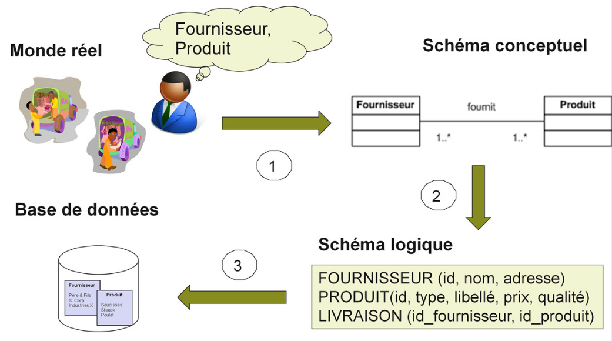
Notons cependant que le modèle relationnel est aujourd’hui utilisé par la grande majorité des SGBD (environ ¾) et que l’on retrouve également d’autres modèles (ex. : navigationnel et déductif)
Un peu d'histoire
| Année | Evenement |
|---|---|
| 1964 | Développement de la première base de données, un magasin de données intégré (IDS), par Charles Bachman chez General Electric. |
| 1966 | IBM introduit le système de gestion de l’information (IMS), développé conjointement avec Rockwell et Caterpillar. |
| 1970 | Edgar F. Codd introduit le modèle relationnel dans un document intitulé “A Relational Model of Data for Large Shared Data Banks”. |
| 1974 | Le langage de requête structuré (SQL) est créé. |
| 1976 | Peter Chen présente le modèle entité-relation dans son article intitulé “The Entity-Relationship Model – Toward a Unified View of Data” (Le modèle entité-relation – vers une vue unifiée des données). |
| 1979 | Oracle lance la première base de données relationnelle commerciale qui utilise SQL. |
| 1980 | IBM présente System R, le système de gestion de bases de données relationnelles basé sur SQL. |
| 1981 | SQL/DS, le premier SGBD complet à fonctionner sur des ordinateurs personnels, est lancé par IBM. |
| 1983 | La première version de DB2 d’IBM est publiée pour les ordinateurs centraux. |
| 1986 | Le Manifeste sur les systèmes de bases de données orientées objet est publié, donnant une impulsion significative au développement des bases de données orientées objet. |
| 1996 | Lancement de PostgreSQL, l’un des premiers systèmes de gestion de bases de données relationnelles à code source ouvert. |
| 1998 | MySQL, un autre SGRD à source ouverte important, est publié pour Windows 95 et NT. |
| 1998 | Microsoft lance SQL Server 7.0, une réécriture complète de son SGBD. |
| 2000 | Les start-ups de l’Internet adoptent les bases de données XML. |
| 2004 | Le terme “NoSQL” gagne en popularité et donne naissance à une nouvelle génération de bases de données non relationnelles et distribuées. |
| 2006 | Google publie un article sur BigTable, sa base de données NoSQL interne, influençant une nouvelle vague de bases de données NoSQL open-source |
| 2012 | |
| 2013 | Publication de FoundationDB, une base de données distribuée conçue pour traiter de grands volumes de données structurées. |
| 2017 | Google annonce Spanner, une base de données distribuée à l’échelle mondiale. |
| 2020s | Poursuite du développement et de l’innovation dans la technologie des SGBD, en mettant l’accent sur les bases de données cloud-natives, les bases de données edge et les améliorations de l’intégration de l’IA pour la gestion des bases de données. Les bases de données blockchain deviennent également un sujet d’intérêt important. |
source : technopedia
2 Les modèles de base de données⚓︎
L’organisation sémantique des informations peut être réalisée suivant plusieurs modèles de données. Les principaux modèles de base de données sont les suivants :
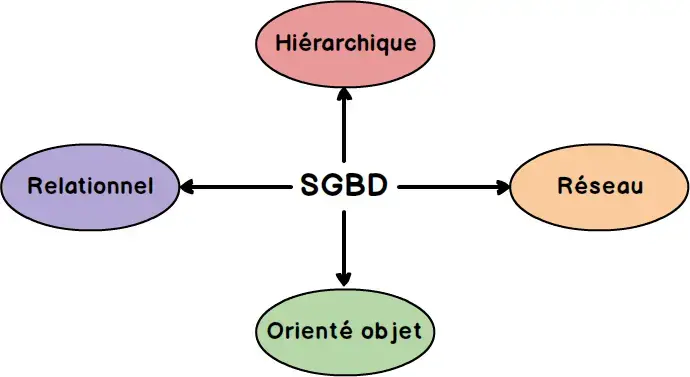
Le modèle hiérarchique
Le modèle réseau
Le modèle relationnel
Le modèle objet
2.1 Le modèle hiérarchique⚓︎
Conçu à la NASA pour la gestion des données du programme spatial Apollo, les données sont classées hiérarchiquement, selon une arborescence descendante. Ce modèle utilise des pointeurs entre les différents enregistrements. Bien adapté à des données de type nomenclatures avec une relation 1 vers N mais inapproprié aux structures de données complexes.
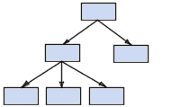
Les fichiers XML constituent une réminiscence des bases de données hiérarchiques.
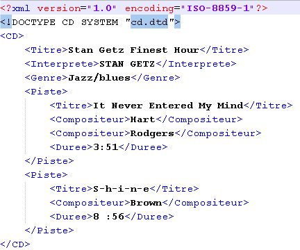
Exemples de base de données naturelles hiérarchiques :
 La classification du vivant relève du modèle hiérarchique de base de données : Le chat appartient à la famille des félidés, du sous-ordre féliformes de l’ordre des carnivores, de la classe des mammifères, du sous-embranchement des vertébrés du règne animal.
La classification du vivant relève du modèle hiérarchique de base de données : Le chat appartient à la famille des félidés, du sous-ordre féliformes de l’ordre des carnivores, de la classe des mammifères, du sous-embranchement des vertébrés du règne animal.
 Vu de l’utilisateur, un système de fichiers s’apparente à une base de données hiérarchique (arborescence des dossiers)
Vu de l’utilisateur, un système de fichiers s’apparente à une base de données hiérarchique (arborescence des dossiers)
 Problème : Le point d’accès de l’information est unique (la racine). Il faut parfois parcourir toute l’arborescence pour trouver une information.
Problème : Le point d’accès de l’information est unique (la racine). Il faut parfois parcourir toute l’arborescence pour trouver une information.
2.2 Le modèle réseau⚓︎
Ce modèle constitue une extension du modèle hiérarchique, il utilise des pointeurs vers des enregistrements selon une structure arborescente. Il est cependant possible d’établir des liens sans restriction entre les différents éléments.
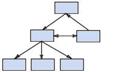
Imaginé par Charles Bachman, sa spécification a été publiée en 1969 par le consortium Codasyl, à l’origine du langage Cobol. Plus que le modèle hiérarchique, le modèle réseau implique une connaissance de la structure de la base de données pour permettre l’accès aux données : les logiciels sont dépendants de la structure de la base.
Exemple :
 Des données généalogiques peuvent être organisées selon le modèle réseau : Un enregistrement de type parent dispose d’un pointeur vers chacun des membres de sa descendance. Chaque membre de la descendance dispose d’un pointeur vers son aîné et d’un autre vers son cadet.
Des données généalogiques peuvent être organisées selon le modèle réseau : Un enregistrement de type parent dispose d’un pointeur vers chacun des membres de sa descendance. Chaque membre de la descendance dispose d’un pointeur vers son aîné et d’un autre vers son cadet.
Problème : Pour retrouver une donnée dans une telle représentation, il faut connaître le chemin d'accès (les liens) ce qui rend les programmes dépendants de la structure de données
2.3 Le modèle relationnel⚓︎
Ce modèle du milieu des années 70 est fondé sur la théorie mathématique des relations. Un modèle relationnel peut être vu comme un ensemble de tables (ou relations) à \(n\) colonnes, \(n\) désignant le degré de la relation.
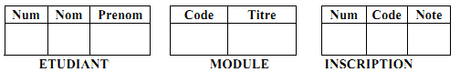
Une base de données relationnelle est donc constituée d’un ensemble de données structurées sous forme de relations.
Une base de données relationnelles est très efficace dans la plupart des cas pour gérer les données. Mais Une structuration inadéquate des données peut suivant les cas :
être source de redondance, c’est-à-dire de répétition inutile d’information. Cette redondance pouvant à son tour entraîner des incohérences lors de mises à jour, si on ne modifie pas l’information redondante partout où elle est présente
2.4 Le modèle objet⚓︎
La notion de bases de données objet ou relationnel-objet est plus récente.
Les données sont représentées sous forme d'objets. Comme en programmation orientée objet, les objets contiennent les données qui les décrivent ainsi que la logique qui permet de les utiliser ou de les modifier. Chaque enregistrement de la base de données constitue une instance de la classe d’objets correspondante. Ces instances sont classées de manière hiérarchique dans la base de données.
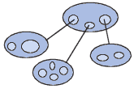
Les SGBDO (Systèmes de Gestion de Bases de Données orientés Objet) sont recommandés pour les applications nécessitant des performances élevées dans la manipulation de données complexes.
Problème : Ils ont pour inconvénient principal une très importante quantité de ressources (mémoire et temps de calcul). Ils sont par conséquent cantonnés à des niches telles que l’ingénierie, les études spatiales, ou encore la recherche fondamentale en physique et en biologie moléculaire.
2.5 Le Modèle NoSQL⚓︎
Le modèle NoSQL (Not Only SQL) est un type de système de gestion de bases de données qui offre une approche flexible pour stocker et gérer des données, en contraste avec les bases de données relationnelles traditionnelles (SQL). Contrairement aux bases de données relationnelles qui reposent sur des tables fixes et des schémas stricts, NoSQL est conçu pour gérer des données non structurées ou semi-structurées et s'adapte mieux à des volumes massifs de données avec des structures de données variées.
Plusieurs types principaux de bases de données NoSQL :
Bases de données de type clé-valeur : Stockent les données sous forme de paires clé-valeur (ex. Redis, DynamoDB).
Bases de données documentaires : Stockent les données sous forme de documents (souvent JSON ou BSON), avec des champs flexibles (ex. MongoDB, CouchDB).
Bases de données en colonnes : Organisent les données en colonnes plutôt qu’en lignes, adaptées à des requêtes massives (ex. Cassandra, HBase).
Bases de données de type graphe : Gèrent des données fortement interconnectées, souvent pour des applications de réseaux sociaux ou de recommandations (ex. Neo4j, OrientDB).
 Avantage : Flexibilité des schémas, évolutivité massive en terme de taille, performance élévée en lecture/écriture
Avantage : Flexibilité des schémas, évolutivité massive en terme de taille, performance élévée en lecture/écriture
Problème : Manque de normalisation des données, Difficulté avec les requêtes complexes, complexité de gestion des données déportée côté développement
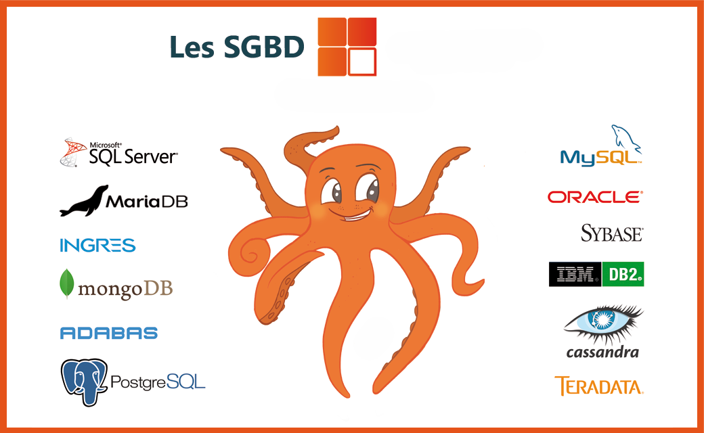
3 Le système relationnel⚓︎
Définition SGBD
Ensemble des programmes permettant la gestion et l’accès à une base de données
Elle est dite SGBDR lorsqu’elle concerne une base de données relationnelle.
Les SGBD relationnels sont à l’heure actuelle les plus diffusés sur le marché.
Ils permettent d’organiser les données sous formes de tables.
La description de la base de données est faite grâce à un schéma conceptuel ou relationnel permettant de décrire toutes les tables (relations) implantées sur disque.
Un SGBDR sert à effectuer des opérations ordinaires telles que consulter, modifier, construire, organiser, transformer, copier, sauvegarder ou restaurer des bases de données.
3.1 Les objectifs d’un SGBDR⚓︎
 Indépendance physique: un remaniement de l’organisation physique des données n’entraîne pas de modification des programmes d’application (traitements)
Indépendance physique: un remaniement de l’organisation physique des données n’entraîne pas de modification des programmes d’application (traitements)
Exemple : indépendante des structures de stockage utilisées. Changement de serveur.
 Indépendance logique : un remaniement de l’organisation logique des fichiers n’entraîne pas de modification dans les programmes d’application non concernés.
Indépendance logique : un remaniement de l’organisation logique des fichiers n’entraîne pas de modification dans les programmes d’application non concernés.
Exemple : ajout d’une rubrique (date de naissance d’un étudiant)
 Manipulation facile des données : un utilisateur non-informaticien doit pouvoir manipuler simplement les données (interrogation et mise à jour)
Manipulation facile des données : un utilisateur non-informaticien doit pouvoir manipuler simplement les données (interrogation et mise à jour)
 Administration facile des données : un SGBD doit fournir des outils pour décrire les données, permettre le suivi de ces structures et autoriser leur évolution.
Administration facile des données : un SGBD doit fournir des outils pour décrire les données, permettre le suivi de ces structures et autoriser leur évolution.
 Efficacité des accès aux données : garantie d’un bon débit (nombre de transactions par seconde) et d’un bon temps de réponse (temps d’attente moyen pour une transaction)
Efficacité des accès aux données : garantie d’un bon débit (nombre de transactions par seconde) et d’un bon temps de réponse (temps d’attente moyen pour une transaction)
 Redondance contrôlée des données : diminution du volume de stockage, pas de mise à jour multiple ni d’incohérence.
Redondance contrôlée des données : diminution du volume de stockage, pas de mise à jour multiple ni d’incohérence.
 Cohérence des données : exemple : L’âge d’une personne doit être un nombre entier positif. Le SGBD doit veiller à ce que les applications respectent cette règle.
Cohérence des données : exemple : L’âge d’une personne doit être un nombre entier positif. Le SGBD doit veiller à ce que les applications respectent cette règle.
 Partage des données : utilisation simultanée des données par différentes applications
Partage des données : utilisation simultanée des données par différentes applications
 Sécurité des données : les données doivent être protégées contre les accès non-autorisés ou en cas de panne.
Sécurité des données : les données doivent être protégées contre les accès non-autorisés ou en cas de panne.
3.2 Les composants d’un SGBDR⚓︎
Un SGBD est un ensemble de logiciels parmi lesquels il y a un moteur de base de données, un interprète du langage SQL, une interface de programmation, et diverses interfaces utilisateur.
Le moteur de base de données: C’est le composant central du SGBD qui effectue la majorité des traitements de manipulation du contenu des bases de données.
Interprèteur SQL : SQL est un langage informatique qui sert à exprimer des requêtes d'opérations sur les bases de données. L'interprète SQL décode les requêtes, et les transforme en un plan d'exécution détaillé, qui est alors transmis au moteur de base de données.
Interface de programmation : C’est une bibliothèque logicielle qui permet à un programme tiers de communiquer avec le SGBD, de demander des opérations et de récupérer des données provenant des bases de données. Le détail des demandes est souvent formulé en langage SQL.
Interface utilisateur : C’est l’interface graphique (homme-machine) qui permet de mettre en oeuvre toutes les fonctionnalités proposées par le SGBD. On retrouve parfois une interface dédiée à l’interrogation des données appelée QBE (Query By Example) : Le principe est que l'utilisateur présente un exemple du résultat de recherche attendu (sous forme d'une matrice), puis le soumet au SGBD.
3.3 Les fonctions d’un SGDBR⚓︎
Un SGBDR possède plusieurs fonctions :
Description des données LDD : Langage de définition de Données : permet de décrire et de maintenir le structure des données (nom, longueur, type …) constituant la base.
A une base de données est associée un schéma, appelé MPD (Modèle physique de Donnée), qui décrit la structure et le type des données qu'elle contient et éventuellement quelques règles (ou contraintes) qui doivent être toujours vérifiées.
Manipulation de données LMD : Langage de manipulation de Données : recherche, mise à jour, transformation des données.
Contrôle de l’intégrité des données LCD : respect des contraintes d’intégrité (Il ne peut y avoir qu’un seul fournisseur f1, unicité d’une ligne)
Gestion des transactions : atomicité des transactions (pas de mélange entre transactions), accès simultané aux mêmes données rendu possible grâce à des techniques de verrou et sécurité (mot de passe, etc …)
Ces fonctions permettent :
 l'utilisation par des « non-informaticiens », c'est-à-dire n'ayant pas besoin de connaissance en système ou en programmation (mais l'apprentissage du langage d'extraction des données est lui indispensable)
l'utilisation par des « non-informaticiens », c'est-à-dire n'ayant pas besoin de connaissance en système ou en programmation (mais l'apprentissage du langage d'extraction des données est lui indispensable)
l'écriture de programmes indépendants de la structure des données.
3.4 Les différents type d’utilisateurs⚓︎
On peut distinguer plusieurs rôles que doivent jouer un individu ou un groupe d’individus pour concevoir, créer, mettre en œuvre et exploiter une base de données.
 Le développeur d’applications (ou analyste programmeur) : Après modélisation du système d’information étudié, c’est lui qui propose le modèle relationnel de la future base de données. Il est chargé ensuite d’élaborer les programmes pour exploiter la base de données.
Le développeur d’applications (ou analyste programmeur) : Après modélisation du système d’information étudié, c’est lui qui propose le modèle relationnel de la future base de données. Il est chargé ensuite d’élaborer les programmes pour exploiter la base de données.
 L’administrateur de la base de données : C’est lui qui (à partir du modèle relationnel) est chargé de l’aspect plus technique de la création de la base. Il assure les fonctionnalités d’administration et de sécurité des données.
L’administrateur de la base de données : C’est lui qui (à partir du modèle relationnel) est chargé de l’aspect plus technique de la création de la base. Il assure les fonctionnalités d’administration et de sécurité des données.
L’utilisateur : Il s’agit de caractériser ici la personne qui se sert simplement de la base de données et qu’on appelle couramment l’utilisateur final (End User en anglais). Ces personnes ne sont pas des informaticiens, elles utilisent les ressources logicielles mises à disposition par le développeur et l’administrateur. L’utilisateur « averti » est capable d’interroger la base en utilisant le langage SQL.
4 Le modèle relationnel⚓︎
4.1 Notions de table et de relation⚓︎
L’unité de stockage dans une base de données relationnelle est la table.
définition
Une table regroupe un ensemble de données qui décrivent un même objet. On la représente graphiquement sous une forme de tableau dans lequel les lignes sont appelés enregistrements ou tuple ou nuplet et l’intitulé des colonnes les champs ou attributs.
A l’intersection d’une ligne et d’une colonne figure une valeur.
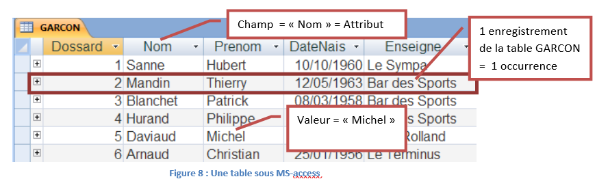
Au niveau relationnel, ces tables correspondent aux relations ci-dessous :
GARCON(dossard, nom, prenom, datenais, enseigne)
PRODUIT(refproduit, designproduit, commentaireproduit, prixttcproduit, codegamme)
Ce mode de représentation est appelé « en intention », il représente la structure de la base de données (son schéma, son plan…). Par convention, le nom d’une table s’écrit en MAJUSCULE.
Au niveau relationnel, on parlera d’occurrences pour désigner les enregistrements et d’attributs pour parler des champs.
Chaque propriété de l’objet contenu dans la table doit être décrit par :
 Son nom
Son nom
Son type de données
| Champ | Type |
|---|---|
| numCla | Numérique |
| libelléCla | Texte |
exemple de type de données :
 Texte : liste de caractères (lettres, chiffres, signes de ponctuation)
Texte : liste de caractères (lettres, chiffres, signes de ponctuation)
 Numérique : données numériques utilisées dans des opérations mathématiques
Numérique : données numériques utilisées dans des opérations mathématiques
 Date/Heure : valeur de date et heure
Date/Heure : valeur de date et heure
Booléen : utilisé pour décrire un champ qui ne peut prendre qu’une des 2 valeurs Oui/Non ou Vrai/Faux ou Actif/Inactif.
4.2 Attributs et clés⚓︎
Définition
Un attribut est une information, une donnée élémentaire, une rubrique désignant le plus petit élément d’information manipulable. Il est caractérisé par un nom et un type.
Exemples :
nomClient : attribut de type alphabétique (ex. de valeur : "DUPOND", "PAYET", ...)
qteCmdee : attribut de type entier (ex. de valeurs : 5, 10, 2, ...)
APPLICATION⚓︎
Soit la relation
LECTEUR (nomLecteur, prenomLecteur)
et le contenu de la table correspondante :
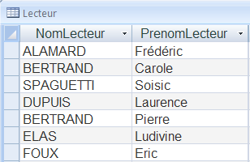
Que pensez-vous de l’exemple ci-dessus ?
Il faut définir une clé pour cette relation.
La clé est un attribut qui permet de distinguer chaque occurrence d’une relation par rapport à tous les autres. Toutes les valeurs de cet attribut doivent être uniques.
 Une relation doit posséder au moins un attribut et si c’est le cas, ce doit être la clé.
Une relation doit posséder au moins un attribut et si c’est le cas, ce doit être la clé.
4.3 Clé candidate et clé primaire⚓︎
4.3.1 Notion de clé primaire⚓︎
Définition
Dans une base de données relationnelle, une clé primaire est la donnée qui permet d'identifier de manière UNIQUE un enregistrement dans une table.
Une clé primaire est un attribut dont les valeurs sont UNIQUES et NON NULLES
Les clés candidates sont des attributs susceptibles de pouvoir jouer le rôle de clé.
Dans le cas de la Table LECTEUR, aucun des champs ne peut jouer le rôle de clé. On rajoute alors un champ supplémentaire qui permettra de distinguer chaque lecteur :
LECTEUR (numLecteur, nomLecteur, prenomLecteur)
Le champ numLecteur devient alors la clé primaire de la relation. Par convention, ce doit être le premier attribut de la relation et il doit être souligné. Dans la plupart des SGBDR, un type numérique spécial est dédié à ce type clé. Appelé NuméroAuto, AutoIncrement… il est géré automatiquement par le SGBDR.
Compléments
Une clé primaire peut être composée d'une ou de plusieurs colonnes de la table. Deux lignes distinctes de la table ne peuvent pas avoir les mêmes valeurs dans les colonnes définies comme clé primaire. Il est possible de définir pour une même table plusieurs contraintes d'unicité, mais au plus une seule clé primaire. Une clé primaire est choisie parmi les clés candidates. Suivant les cas il peut être nécessaire ou préférable d'utiliser une clé artificielle ajoutée aux données comme clé primaire.
4.3.2 Notion de Clé étrangère⚓︎
Ce type d’attribut permet de matérialiser les liens entre les différentes tables.
 Une clé étrangère correspond à la clé primaire d’une autre table.
Une clé étrangère correspond à la clé primaire d’une autre table.
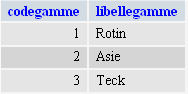 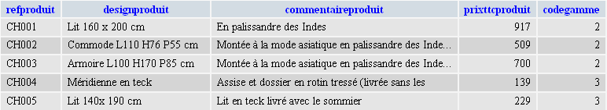
Dans l’exemple ci dessus le dernier champ de la table PRODUIT appelé codeGamme correspond en fait à une valeur existante dans une autre table GAMME.
Le champ codeGamme assure la liaison entre les deux tables. Ainsi, dans la table PRODUIT, on note que le produit désigné par « Lit 140x 190 cm » fait partie de la gamme n°3.
Dans la table GAMME on trouvera que la gamme n°3 correspond aux produits fabriqué en teck.
Le schéma relationnel de cette base peut s’écrire comme ci-dessous :
GAMME (codegamme, libellegamme)
PRODUIT (refproduit, designproduit, commentaireproduit, prixttcproduit, #codegamme)
Par convention, une clé étrangère est précédée d’un # et est placée en dernier dans la liste des attributs d’une relation.
Base étudiant
Un établissement scolaire a besoin d'enregistrer des étudiants, ainsi que les modules (cours) auxquels ils sont inscrits. Un analyste a esquissé le schéma conceptuel suivants.
1. Donner des exemples d'occurrences pour chaque table.
2. Précisez pour chaque champ s’il peut ou non être clé candidate pour être clé primaire.
Justifiez.
3. Donner le schéma relationnel 'en intention' de la base Etudiant
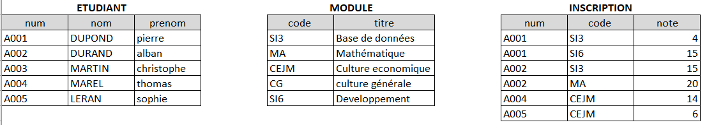
Pour la table ETUDIANT :
seul num peut être un attribut candidat. nom et prenom ne peuvent servir d'identifiant de personne du fait des homonymes.
Pour la table MODULE :
Les deux champs peuvent être candidat si l'on part du postulat que deux cours ne peuvent pas porter le même nom. Le champ code est plus adequate car plus synthétique.
Pour la table INSCRIPTION :
Le champ num ne peut pas être candidat : un etudiant peut suivre plusieurs matières (ici voir A001)
Le champ code ne peut pas être candidat : une matière est suivie par plusieurs etudiants (ici SI3)
Le champ note ne peut pas être candidat : Une note peut être attibuée plusieurs fois.
Il est possible créer un champ artificiel numéroté mais une autre solution est de choisir une combinaison de champ. Ici la clé primaire est la combinaison des champs num et code. c'est également cohérent avec le fonctionnel, un etudiant suit un cours.
Il y a une et une seule clé primaire qui porte sur plusieurs champs.
ETUDIANT(num,nom, prenom)
MODULE(code, titre)
INSCRIPTION(num, code, note)
4.5 Notions d’intégrité⚓︎
Dans le domaine des bases de données, l’intégrité des données regroupe l’intégrité d’entité, l’intégrité de domaine, l’intégrité référentielle et l’intégrité définie par l’utilisateur.
Dans le paragraphe «3.1 Les objectifs d’un SGBDR» nous avons vu que l’un des principaux objectifs d’un SGBDR était d’assurer la cohérence des données appelée également intégrité des données.
Cette cohérence est en partie assurée par la mise en place de contraintes d’intégrité.
Intégrité d’entité
L’intégrité d’entité définit une ligne comme étant une entité unique pour une table particulière. Elle garantit l’intégrité des colonnes d’identification ou de la clé primaire d’une table.
Chaque table dispose d’une clé primaire et UNE SEULE.
Intégrité de domaine
L’intégrité de domaine définit un ensemble de valeurs acceptables qu’une colonne est autorisée à contenir. Cette intégrité peut inclure des contraintes et d’autres mesures limitant le format, type et nombre de données saisies.
Les contraintes de domaines sont liées aux colonnes des tables (attribut non nul, entier positif, valeurs comprises dans un intervalle…)
Intégrité référentielle
L’intégrité référentielle garantit la cohérence des valeurs de clés entre les tables. Ce type de cohérence impose qu’il n’y ait aucune référence à des valeurs inexistantes.
Plus précisément, il s’agit ici pour le SGBDR de vérifier la cohérence clé étrangère/clé primaire.
La définition d’une telle contrainte forcera le SGBDR à faire les contrôles suivants :
 Dans un champ clé étrangère il est impossible de renseigner une valeur qui n’existe pas dans la clé primaire (Le code gamme n° 4 ne peut être affecté à un produit si la gamme n’existe pas)
Dans un champ clé étrangère il est impossible de renseigner une valeur qui n’existe pas dans la clé primaire (Le code gamme n° 4 ne peut être affecté à un produit si la gamme n’existe pas)
Impossible de supprimer un enregistrement de la table contenant la clé primaire s’il existe des enregistrements liés (Dans la table gamme, l’enregistrement correspondant au code gamme n°2 ne pourra être supprimé car il existe, dans la table produit, des enregistrements liés.
I mpossible de modifier une valeur de clé primaire dans la table primaire si cet enregistrement a des enregistrements liés.